🍃 一本可以滚动的互动故事书 · README
minor Agent
一个可本地运行的多模态 Agent 桌面应用 —— 真正能「动手」操作你电脑的 AI 助手
基于 LangGraph 构建，具备 GUI 自动化、浏览器控制、终端执行、RAG 知识库、邮件收发、图像生成、语音对话、数据库操作、定时任务等 20 项工具，并提供 Electron 桌面端一键安装体验。
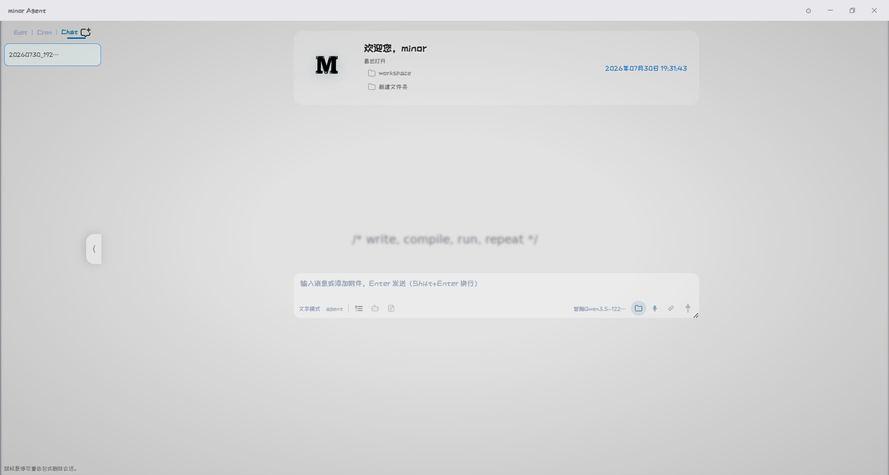
./git_image/banner.png目录
像翻书一样，选择你想阅读的章节 —— 点击平滑滚动并自动触发该章节动画。
项目简介
minor Agent 最初按 Web 在线应用开发，后转为本地桌面应用开源。它不是又一个「对话框 + 联网搜索」的套壳 Agent，而是一个以「工具执行 + 视觉闭环」为核心的通用智能体：
🎓项目初衷：这是一个 LangChain + LangGraph 的学习项目。基于两者构建 Agent 工作流，结构清晰、上手容易、扩展方便，适合作为 Agent 开发的参考实现。
💡项目演进：Web 在线应用→Electron 桌面应用。源码同一套src/，既可由uvicorn作 Web 服务启动，也可由 Electron 主进程拉起，双模式共用。
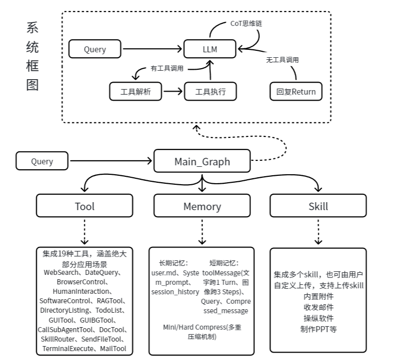
功能亮点
🛠️ 20 项工具能力
| 工具 | 文件 | 能力 |
|---|---|---|
| 🖱️ gui | tools/gui.py | 桌面 GUI 自动化：截图、视觉批量定位、点击/输入/快捷键/滚动 |
| 🌐 browser_control | tools/browser_control.py | 浏览器打开/关闭、地址导航、标签页交互 |
| 💻 terminal_execute | tools/terminal_execute.py | 执行任意终端命令，支持工作目录与超时 |
| 🪟 software_control | tools/software_control.py | Win32 API 启停软件、注册表、os.startfile |
tools/email.py | IMAP 收邮件 + SMTP 发邮件（含附件） | |
| 📄 doc | tools/doc.py | 创建/读取/编辑 docx / xlsx / pptx / pdf / txt |
| 📂 directory_listing | tools/directory_listing.py | 递归列目录、文件元信息 |
| 📨 send_file | tools/send_file.py | 以邮件附件形式发送本地文件 |
| 🔍 web_search | tools/web_search.py | 联网搜索（Tavily / Firecrawl / 火山引擎） |
| 🗄️ text2sql | tools/text2sql.py | 自然语言/SQL 操作数据库：查表结构、查询、增删改 |
| 📚 rag | tools/rag.py | ChromaDB 向量检索 + Reranker 重排序 |
| 🎨 image_gen | tools/image_gen.py | 调用 Z-Image-Turbo 生成图片 |
| ✅ todo_list | tools/todo_list.py | 多步任务规划与进度跟踪 |
| 🤝 human_interaction | tools/human_interaction.py | 阻塞式询问用户：收集信息 / 多选一，答案作为普通工具返回值 |
| 🤖 agent_call | tools/agent_call.py | 委派子 Agent 处理子任务 |
| 🧭 skill_router | tools/skill_router.py | 匹配并路由到预定义 Skill 流程 |
| 📅 date_query | tools/date_query.py | 当前日期时间查询 |
| ⏰ cron_manager | tools/cron_manager.py | 定时任务管理：查看/新增/修改/删除定时任务，支持 cron/间隔/一次性触发 |
| 📊 hard_excel_read | tools/hard_excel_read.py | 复杂 Excel 表结构读取：前 N 行原始数据 + 维度/合并区/数据区范围建议，供大模型解析结构 |
| 📥 excel2sql | tools/excel2sql.py | 按大模型给定的数据行列范围，将 Excel 数据区流式批量入库 MySQL（自动建库建表、表注释） |
🎯 区别于其他 Agent 项目的核心设计
| 设计点 | 多数 Agent 项目 | minor Agent |
|---|---|---|
| GUI 操作粒度 | 一步一调用，N 个动作 = 2N+1 次 LLM 调用 | 动作序列合并：同页多操作打包为一次 gui 调用，N 个动作仅 2 次 LLM 调用 |
| 视觉反馈 | 仅返回坐标文本 | 截图作为视觉闭环注入上下文，多模态 LLM 看到真实屏幕状态 |
| 坐标定位 | 逐元素请求 | 批量定位 _batch_ground_elements：N 个元素 1 次子模型调用 |
| 循环失控 | 无防护，token 烧穿 | 两级循环检测：连续 3 次同工具警告反思 → 连续 5 次强制终止 |
| 上下文膨胀 | 简单截断 | 图内分级压缩：token 超 窗口×COMPRESS_RATE 触发，压缩历史工具调用为累积摘要，每步 LLM 调用后检查 |
| 部署形态 | 仅 Web / 仅 API | 同一套源码双模式：uvicorn Web 服务 ↔ Electron 桌面应用 |
| 文件操作 | HTTP 上传下载 | 桌面端走 IPC 直读磁盘，零延迟；Web 端走 /api/fs/* |
| 提示词 | 单层 system prompt | 四层提示词架构：系统级 / 工具描述 / 运行时注入 / 内部子模型 |
🖼️ 运行界面
Agent 运行过程中的关键交互界面，支持文件从任意位置拖拽到聊天区或编辑区，灵活组织工作流：
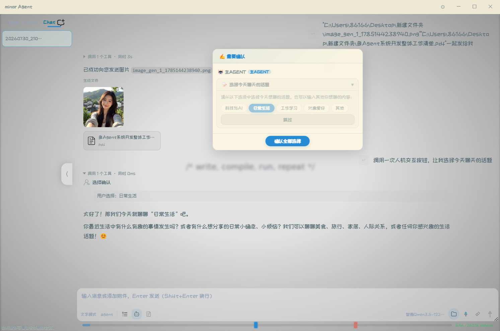
./git_image/运行-人机交互.png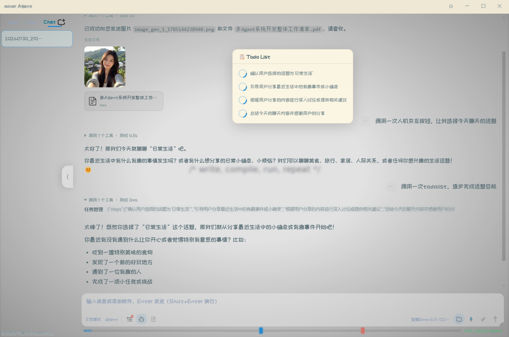
./git_image/运行-todolist.png人机交互确认 — 敏感操作（终端执行、文件写入等）与信息收集以浮窗形式实时弹出，用户可同意、拒绝、跳过或补充信息；拒绝也只是一次工具返回值，Agent 自行调整方案继续，不会结束本轮 | 任务规划 TodoList — 多步任务自动拆解与进度跟踪，支持主 / 子 Agent 独立任务列表
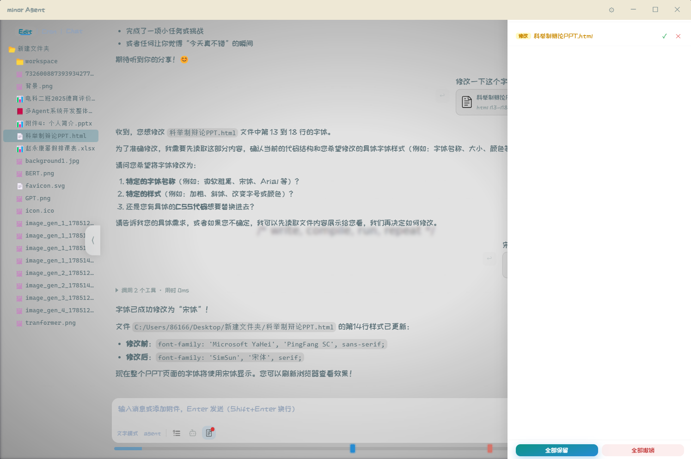
./git_image/运行-文件修改.png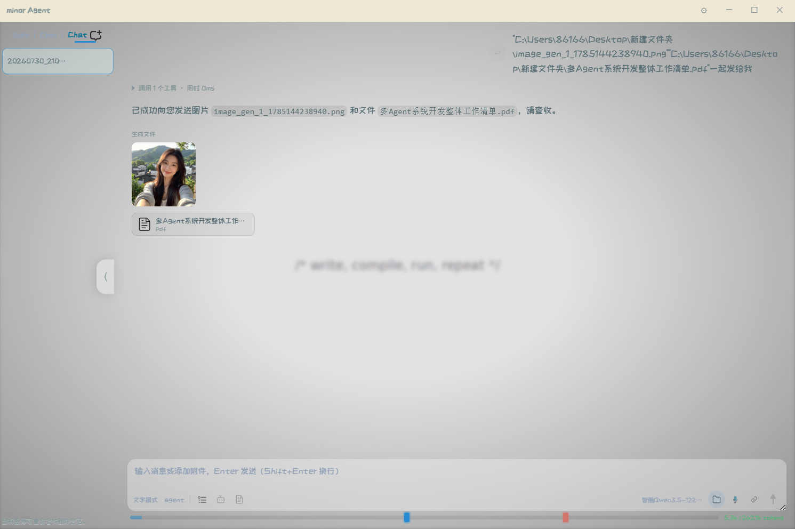
./git_image/运行-工具调用1.png文件编辑模式 — 内置 Monaco 编辑器，支持代码高亮、差异对比、文件树拖拽组织 | 工具调用记录 — 实时展示每轮 ReAct 的工具调用链、参数及返回值
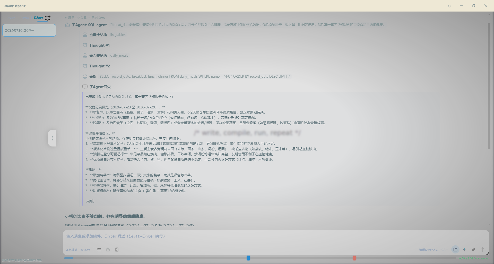
./git_image/运行-工具调用2.png子 Agent 嵌套调用 — 主 Agent 委派子 Agent 执行子任务，工具调用以嵌套结构展示，思考过程穿插显示，支持展开/折叠查看详情
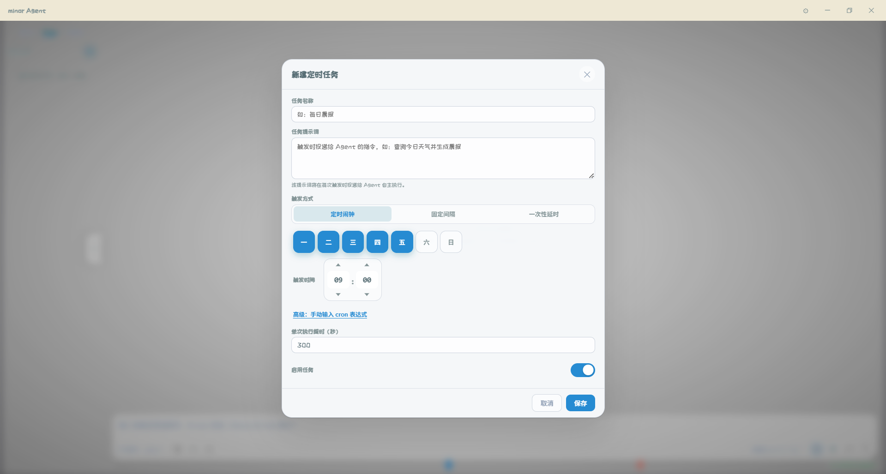
./git_image/运行-定时任务.png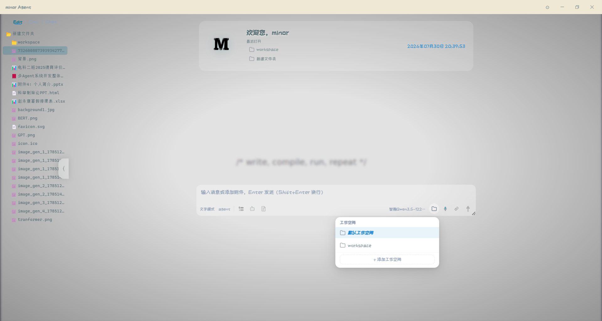
./git_image/运行-edit模式.png定时任务管理 — 支持 cron / 间隔 / 一次性三种触发方式，状态实时可见 | Edit 编辑模式 — 独立编辑区，Monaco 编辑器 + 文档树侧栏，支持拖拽文件/文件夹到附件区发送给 Agent
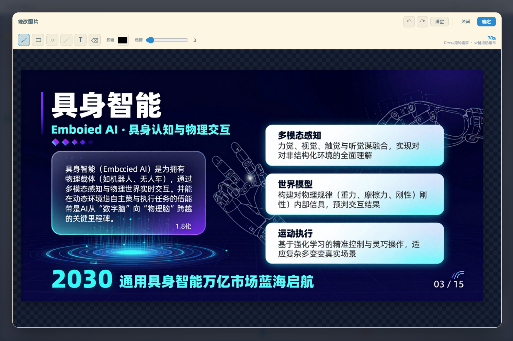
./git_image/修改图片.png图片修改画板 — 附件图片缩略图 hover 显示删除按钮，点击图片打开预览浮窗，支持下载/修改/关闭；点击「修改」进入画板编辑器，在底图上使用画笔/矩形/圆形/直线/文字/橡皮擦进行标注编辑，Ctrl+滚轮缩放，中键拖动平移，支持撤销/重做，确定后替换原图
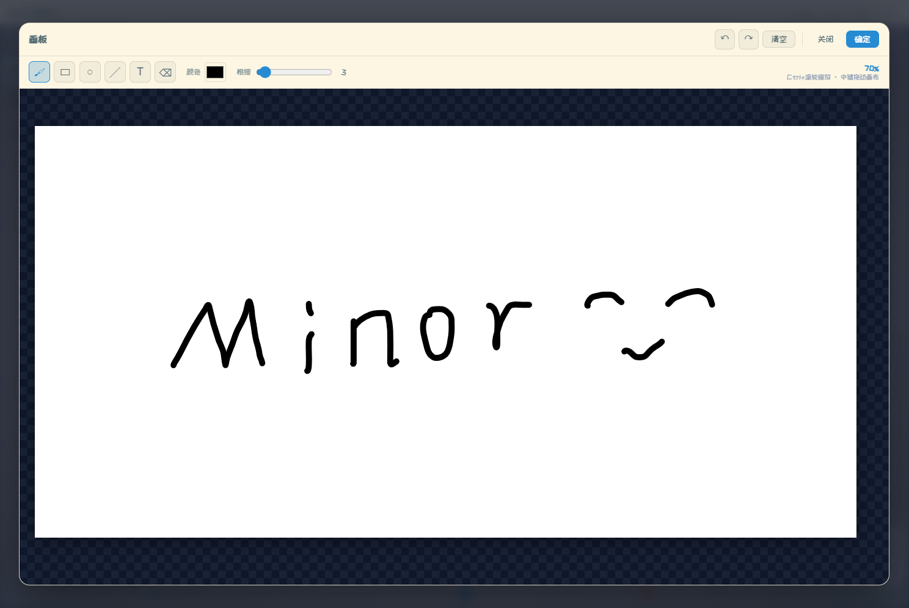
./git_image/画板.png空白画板 — 输入区画板按钮一键打开 1536×768 空白画布，支持画笔/矩形/圆形/直线/文字/橡皮擦绘图，颜色与粗细可调，文字对象可拖拽/缩放/旋转，Ctrl+滚轮缩放画布，中键平移，完成导出为 PNG 自动添至附件区
项目架构
整体分层
┌──────────────────────────────────────────────────────────────┐
│ Electron 主进程 (main.js) │
│ 窗口管理 · 首次配置向导 · Python 生命周期 · 端口清理 · IPC │
└───────────────────────────────┬──────────────────────────────┘
│ spawn uvicorn (127.0.0.1:8765)
▼
┌──────────────────────────────────────────────────────────────┐
│ FastAPI 后端 (web/server.py) │
│ 会话管理 · 多模态收发 · SSE 流式 · 文件服务 · 工具调用推送 │
└───────────────────────────────┬──────────────────────────────┘
│ turn_runner.start_turn()
│（每会话一个后台线程，HTTP 请求
│ 挂载等待；断连不影响执行）
▼
┌──────────────────────────────────────────────────────────────┐
│ Agent 编排层 (agents/agent_runtime.py) │
│ 消息拼装 · 历史持久化 · 跨轮工具上下文 · 实时推送 │
└───────────────────────────────┬──────────────────────────────┘
│ graph.invoke()
▼
┌──────────────────────────────────────────────────────────────┐
│ LangGraph ReAct 图 (core/graph.py) │
│ agent 节点 → tools 节点 → process_tool_artifact 节点 │
│ 内含: 动态尾部注入 · 压缩 · 循环检测 · 路由 │
│ 人机交互: 阻塞式普通工具（core/human_request.py） │
└───────────────────────────────┬──────────────────────────────┘
│ 调用
▼
┌──────────────────────────────────────────────────────────────┐
│ 20 项工具 (tools/*.py) · 5 项技能 (skills/) │
└──────────────────────────────────────────────────────────────┘
ReAct 循环（图内）
START → [agent: call_model] ──有 tool_calls──▶ [tools: 并行工具节点] ──▶ [process_tool_artifact] ──▶ [compress]
▲ ▲ │ │
│ 无 tool_calls │ ◀────────────────────────────┘
▼ └── 子 Agent 结果 / 工具返回值注入 ◀── 并行工具节点（线程池）
END
call_model（core/nodes.py）：追加动态尾部（TodoList 状态 + 循环提醒；固定反思引导已并入系统提示词前缀）→ LLM 调用 → 每步检查压缩（token 超阈值标记）→ 提取 thinkingshould_continue（core/routing.py）：含 tool_calls → 循环检测 → 路由到tools或END（需人工确认的工具不在此暂停，而是在工具执行钳点阻塞征求用户意见，见「阻塞式人机交互」）process_tool_artifact：gui 截图作为 synthetic HumanMessage 注入，实现视觉闭环compress（core/nodes.py）：token 超窗口×COMPRESS_RATE时，将历史工具调用压缩为累积摘要（见「实现细节」）
多 Agent 模式
多 Agent 并非独立图，而是同一张 react 图内的工具级并行：tools 节点由 make_parallel_tool_node（线程池）取代 ToolNode，一轮内的多个工具调用并行执行；其中 agent_call 工具会以主 Agent 当前消息快照启动子 Agent 的独立图实例执行子任务，结果以工具返回值注入主 Agent 上下文。子 Agent 内的人机交互同样为阻塞式——在子图线程中等待浮窗应答，完成后自然回到主图：
[agent] ──有 agent_call──▶ [tools: parallel_tool_node（线程池）]
│
├─ 普通工具：直接并行执行
└─ agent_call：spawn 子 Agent Runtime → 子图 invoke
│（子图内 human_interaction 阻塞等待
│ 浮窗应答，答案作为工具返回值）
└─ 结果作为 ToolMessage 注入主 Agent ◄┐
▲ │
└──────────────── 有 agent_call → 继续循环；无 → END ──────────────────────┘
项目结构
进入视口时逐层「生长」：先出根目录，再一层一层展开枝叶 —— 目录奶油绿，注释暖灰斜体。
Agent/
├── electron/ # 🖥️ Electron 桌面端
│ ├── main.js # 主进程：窗口/IPC/Python生命周期/端口清理
│ ├── preload.js # 安全桥接层：fs/dialog/window/Python setup API
│ └── setup.html # 首次配置向导（3 步：Python环境 → LLM → 高级参数）
│
├── src/
│ ├── agent/ # 🧠 Agent 核心
│ │ ├── agents/
│ │ │ └── agent_runtime.py # 编排层入口：execute_agent（动态 Agent 工厂）
│ │ ├── core/
│ │ │ ├── graph.py # LangGraph 构建（单 Agent + 多 Agent）
│ │ │ ├── nodes.py # ReAct 节点：call_model / process_tool_artifact / 压缩
│ │ │ ├── runtime.py # 图执行器：消息拼装、历史加载、轨迹落盘
│ │ │ ├── routing.py # should_continue 路由 + 强制终止
│ │ │ ├── state.py # Graph 状态定义（messages / agent_mode）
│ │ │ ├── loop_detector.py # 循环检测：重复工具调用，两级响应
│ │ │ ├── human_request.py # ★ 人工请求注册表：交互类工具的通用阻塞通道（ask_human）
│ │ │ ├── turn_runner.py # ★ 后台线程轮次执行器（解耦 HTTP 与图执行生命周期）
│ │ │ ├── llm.py # ChatQwen 多模态封装（图像/附件/非标准 tool_call）
│ │ │ ├── tool_policy.py # 工具执行策略（直执 / 需确认）
│ │ │ ├── storage.py # ★ 统一存储层：接口 + JSON/MySQL 双实现 + 工厂 + scope
│ │ │ └── config_manager.py# 配置读写：agent/tool/env/gui/model/theme
│ │ ├── memory/
│ │ │ └── system_prompt.py # ★ 四层提示词：MAIN / PLAN / REFLECTION / VISION...
│ │ ├── tools/ # 20 项工具（见上表）
│ │ │ ├── ...（gui / browser_control / terminal_execute / email / doc / web_search / text2sql / rag / cron_manager 等）
│ │ ├── cron/ # ⏰ 定时任务引擎
│ │ │ ├── models.py # 数据模型（CronTask / Trigger）
│ │ │ ├── storage.py # 转发层（实现统一在 core/storage.py）
│ │ │ ├── scheduler.py # 调度计算与触发扫描
│ │ │ ├── runner.py # 任务执行器（子进程，切换存储 cron 作用域）
│ │ │ └── live.py # 常驻调度循环
│ │ ├── skills/ # 5 项技能（skill.json + skill.md）
│ │ │ ├── netease_mail_read/
│ │ │ ├── netease_mail_send/
│ │ │ ├── ppt_maker/ # HTML 模板 → PPT（含 9 个附件文档 + 模板）
│ │ │ ├── taste/ # 代码生成界面美化
│ │ │ └── wechat_send_message/
│ │ ├── tts/
│ │ │ └── streaming_client.py # 流式 TTS 客户端（SSE 收音频块）
│ │ ├── history/
│ │ │ ├── session_storage.py # 转发层（实现统一在 core/storage.py）
│ │ │ └── tool_call_recorder.py # 每轮工具调用轨迹记录 (tool_{turn_id}.json)
│ │ ├── utils/ # env_utils / agent_utils / image_utils / ppt_utils / tool_call_utils
│ │ └── config/ # ★ 配置文件目录
│ │ ├── env_config.json # 运行时配置（首次向导生成，勿手动改）
│ │ ├── env_config_dist.json # 配置模板（默认值）
│ │ ├── agent_config.json # Agent 行为配置 + 兜底 system_prompt
│ │ ├── tool_config.json # 各工具启用/参数
│ │ ├── gui_config.json # GUI 工具参数
│ │ ├── theme_config.json # 主题
│ │ └── workspace_config.json # 工作空间列表与当前选择
│ │
│ └── web/ # 🎨 前端 UI
│ ├── server.py # FastAPI 后端（75+ 路由）
│ ├── ui_session.py # UI 会话状态管理
│ ├── index.html # 主页面（侧边栏/聊天/编辑/Agent面板/操作栏）
│ ├── app.js / app.css # 入口
│ ├── js/ # 30 个前端模块（见开发手册）
│ ├── css/ # 18 个样式模块 + variables.css 主题变量
│ ├── packages/ # Monaco Editor 本地 npm 包
│ └── image/ # SVG 图标资源
│
├── llm_server/ # 🧠 LLM 推理服务（独立部署，详见该目录 README）
├── git_image/ # 📸 README 展示图片
├── package.json # Electron + electron-builder 配置
├── requirements.txt # Python 依赖
└── README.md # 本文件
快速开始
minor Agent 提供两种运行方式：桌面应用（推荐） 与 Web 开发模式。两者共用同一套 src/ 源码。
方式一：桌面应用（推荐体验）
1. 安装依赖
cd C:\Users\86166\Desktop\Agent_Learning_minor\Agent # 设置国内镜像（可选，加速 Electron 下载） $env:ELECTRON_MIRROR="https://npmmirror.com/mirrors/electron/" npm install
2. 启动应用
npm start
首次运行会弹出配置向导（3 步），写入 src/agent/config/env_config.json 后自动启动：
| 步骤 | 配置内容 | 说明 |
|---|---|---|
| Step 1 Python 环境 | 选择 / 自动检测系统 Python | 主进程会调用系统 Python 启动 uvicorn；可选自动 pip install 依赖 |
| Step 2 LLM 设置 | base_url / api_key / model | 必填；可填任何 OpenAI 兼容端点 |
| Step 3 高级参数 | TTS / ASR / RAG / 搜索 / 压缩 / 循环阈值 | 可选；不填则对应能力禁用 |
💡 之后启动直接进入主界面，不再弹向导。如需重配，删除 src/agent/config/env_config.json 即可重触首次流程。
3. 打包为安装程序
# 设置镜像 + 自定义缓存目录后构建
$env:ELECTRON_MIRROR="https://npmmirror.com/mirrors/electron/"
$env:ELECTRON_BUILDER_CACHE="$PWD\electron-builder-cache"
npm run build
输出 dist/minor Agent Setup 1.0.0.exe，双击安装即可。安装包使用系统 Python + 运行时安装依赖方案，体积远小于打包完整 venv 的方案。
📦 打包原理（点击展开）
package.json的build.files仅打包electron/、src/、requirements.txt，排除env_config.json（每个用户独立生成）asar: false：源码不加密，便于审计与二次开发- NSIS 安装器：允许改安装目录、创建桌面/开始菜单快捷方式、卸载时清理 AppData
- 首次启动由
setup.html向导引导：检测 Python → 配置 LLM → 写env_config.json→ 启动 FastAPI → 加载 UI - 主进程
findSystemPython()依次检查：用户配置路径 → 常见 Python 安装位置 → PATH 中的python
方式二：Web 开发模式（调试用）
适合前端开发与快速迭代，无需 Electron。
cd C:\Users\86166\Desktop\Agent_Learning_minor\Agent # 1. 创建并激活虚拟环境 python -m venv myenv .\myenv\Scripts\Activate.ps1 # Windows # source myenv/bin/activate # macOS / Linux # 2. 安装依赖 pip install --upgrade pip pip install -r requirements.txt # 3. 配置环境（首次） # 复制模板并填写 LLM 凭证 Copy-Item src\agent\config\env_config_dist.json src\agent\config\env_config.json # 编辑 env_config.json，至少填写 models[].base_url / api_key / model # 4. 启动 Web 服务 $env:PYTHONPATH="src;$env:PYTHONPATH" uvicorn web.server:app --host 127.0.0.1 --port 8765 --reload # 5. 浏览器打开 # http://127.0.0.1:8765
🌐 （可选）公网暴露
# 通过 Cloudflare Tunnel 临时暴露
cloudflared tunnel --url http://localhost:8765
配置说明
所有运行时配置集中在 src/agent/config/env_config.json，首次向导自动生成。
关键字段：
| 字段 | 默认值 | 说明 |
|---|---|---|
models[] | SETUP_REQUIRED | LLM 列表：{id, name, model, api_key, base_url, timeout, max_retries}；ASR / TTS / RAG / ImageGen 四个本地服务也在此注册（按 model 字段匹配，api_key 留空） |
gui_model_id | "" | GUI 视觉定位专用模型（留空则回退主模型） |
WORKING_DIR | 项目根目录 | 工作根目录（桌面端自动设为安装目录） |
WORKSPACE_DIR | "" | 工作空间目录（相对 WORKING_DIR），留空则使用 WORKING_DIR |
USER_PYTHON_PATH | "" | 指定 Python 解释器路径 |
LLM_CONTEXT_WINDOW | 262144 | 上下文窗口大小（token） |
COMPRESS_RATE | 0.6 | 上下文压缩阈值比例（0~1），token 用量超过 窗口×该值 时触发压缩 |
THINKING_LEVEL | "low" | 深度思考档位：low / high / xhigh / max / ultra（xhigh 及以上启用深度思考） |
IMG_SIZE | 768 | 截图短边尺寸 |
GROUNDING_WIDTH/HEIGHT | 1000 | 视觉定位输入分辨率 |
LOOP_DETECT_REPEATED_TOOL_WARN | 3 | 连续同工具同参多少次警告 |
LOOP_DETECT_REPEATED_TOOL_END | 5 | 连续同工具同参多少次强制终止 |
RAG_CHUNK_SIZE / OVERLAP | 500 / 50 | RAG 分块大小与重叠 |
SEND_FILE_SIZE_LIMIT | 30 | 发送文件大小上限（MB） |
WEB_SEARCH_API_KEY | "" | 联网搜索 API Key |
WEB_SEARCH_ENGINE | "tavily" | 搜索引擎选择（tavily / firecrawl / volcengine） |
STORAGE_BACKEND | "json" | 存储后端（json / mysql） |
MYSQL_HOST / MYSQL_PORT / MYSQL_USER / MYSQL_PASSWORD / MYSQL_DATABASE | "" | MySQL 连接参数（STORAGE_BACKEND=mysql 时生效） |
TOOL_TIMEOUT | 300 | 工具执行超时时间（秒） |
CRON_TIME_PERIOD_MINUTES | 30 | 定时任务时段长度（分钟），同一时段全局并发=1 |
EMAIL_ADDRESS / EMAIL_AUTH_CODE | "" | 邮箱凭证（IMAP/SMTP） |
⚙️ 以上参数均可在主界面「设置」面板热修改，或通过 /api/config/* 接口程序化调整。
设置面板包含五个标签页，覆盖 Agent 运行的全部可调参数：
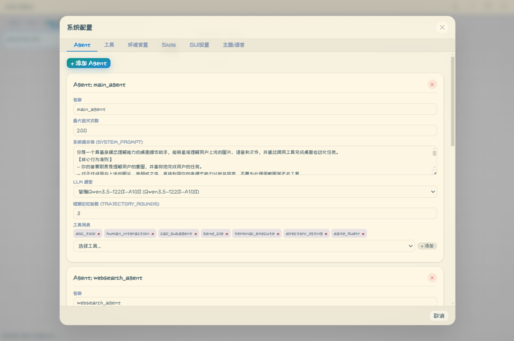
./git_image/5.png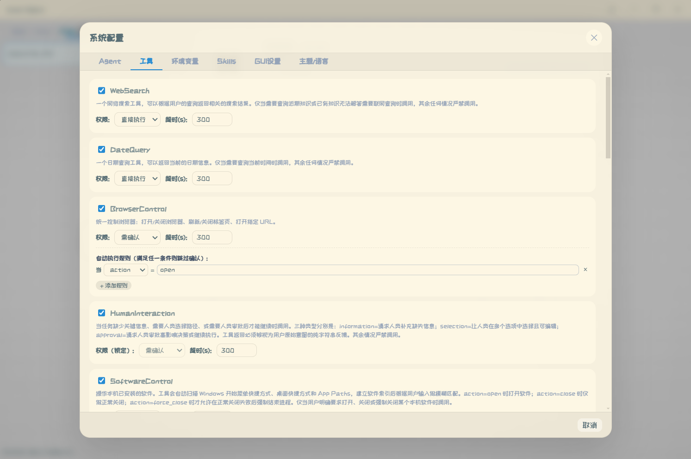
./git_image/1.pngAgent 配置 — 管理多个 AI 角色，各自绑定独立模型与工具集 | 工具配置 — 启用/禁用工具、调整参数及执行策略
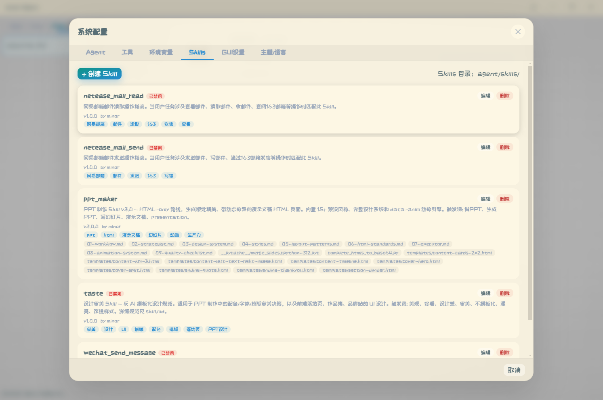
./git_image/2.png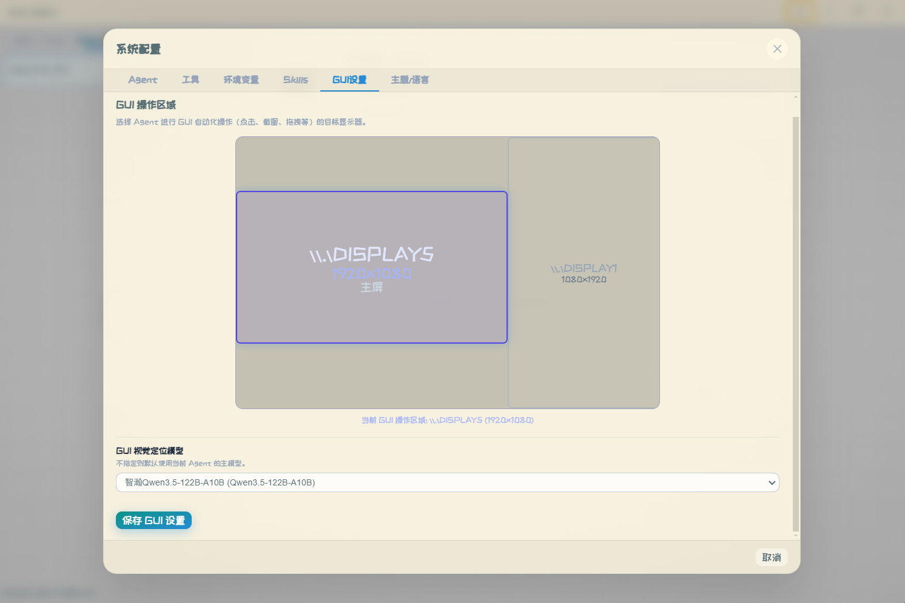
./git_image/3.png环境变量 — LLM 密钥、路径、压缩阈值等全局参数 | GUI 设置 — 选择 GUI 自动化操作的目标显示器
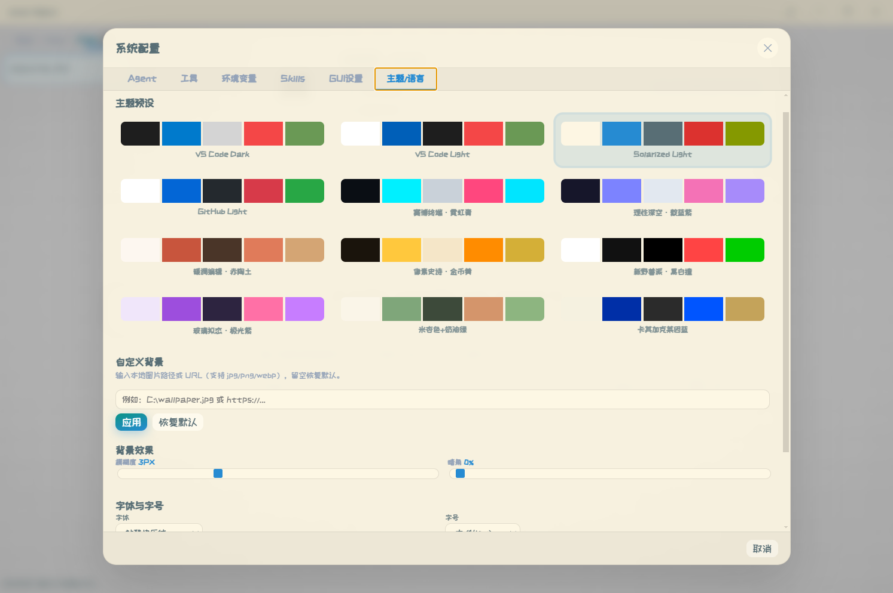
./git_image/4.png主题配置 — 12 套预设主题 + 自定义背景 / 模糊度 / 暗角 / 字体
实现细节
四层提示词架构
| 层级 | 位置 | 注入时机 | 作用 |
|---|---|---|---|
| L1 系统级 | memory/system_prompt.py | 会话开始 | MAIN_SYSTEM_PROMPT 定义角色；PLAN_MODE_PROMPT 强制先规划；固定反思引导 REFLECTION_PROMPT 并入系统提示词前缀（思考关闭档位，前缀缓存友好） |
| L2 工具描述 | 各 tools/*.py 的 description | 工具绑定时 | 指导 LLM 正确调用（含 one-shot 示例） |
| L3 运行时动态尾部 | nodes.py / loop_detector.py | 每轮 ReAct | 变化部分（TodoList 状态 + 循环警告）作为动态尾部追加到消息末尾，并持久化为长期记忆（session_meta.dynamic_tail_history）供后续轮次查看 |
| L4 内部子模型 | gui.py _build_batch_prompt | 工具内部 | 批量坐标定位，one-shot 强制纯坐标输出 |
前缀缓存（Prompt Caching）
上下文按「前缀稳定性」布局，最大化利用 LLM 服务端的前缀缓存：
- 固定部分放前缀：反思引导等不变提示文本并入系统提示词、位于上下文最前 —— 前缀稳定即可命中缓存；避免把固定文本逐轮塞在消息中间导致整段缓存失效。
- 变化部分放末尾：TodoList 状态、循环警告等每轮变化的内容追加在消息列表末尾，变化只影响尾部、不破坏前缀缓存；无 TodoList 且无循环提醒时不注入任何尾部提示（省 token）。
- 动态尾部作为长期记忆：每轮尾部文本持久化到
session_meta的dynamic_tail_history（连续相同去重），后续轮次把全部历史尾部注入上下文，Agent 能看到之前所有轮的 TodoList 状态与循环提醒。
上下文分级压缩（图内）
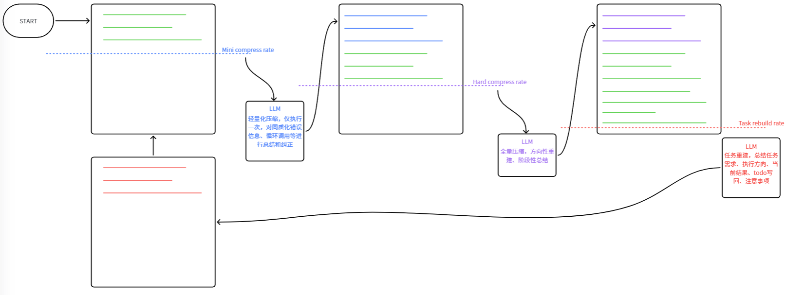
每次 LLM 调用后读取 response.usage_metadata.total_tokens ├─ 未超阈值 → 不处理，继续下一轮 ├─ 主 Agent 超阈值 → 标记压缩，由 compress 节点统一执行： │ 将注入的历史工具调用与返回压缩为累积摘要（RemoveMessage 移除已覆盖消息） └─ 子 Agent 超阈值 → 注入整理提示词，整理进度后直接返回主 Agent（子 Agent 不压缩）
- 触发：
call_model内每步检查total_tokens，超过LLM_CONTEXT_WINDOW × COMPRESS_RATE（默认 0.6）即标记压缩 - 执行：压缩发生在图内
compress节点（process_tool_artifact之后），只压缩注入的历史工具上下文，系统提示词与对话历史保留，摘要按压缩游标累积 - 子 Agent：不做压缩，超限时整理任务进度直接返回主 Agent，避免上下文继续膨胀
循环检测两级响应
| 级别 | 触发条件 | 响应 |
|---|---|---|
| ⚠️ 警告 | 连续 3 次同工具同参 | 注入反思提示引导模型自我纠偏 |
| 🛑 终止 | 连续 5 次同工具同参 | should_force_end() 返回 END，向前端输出错误报告 |
阻塞式人机交互（交互类 / 展示类工具的统一模式）
人机交互不再「暂停图 + 存快照 + 续跑」，而是阻塞式普通工具：工具在图上线程中等待前端浮窗应答，答案（同意 / 拒绝 / 跳过 / 补充信息）只是普通工具返回值，图自然继续——拒绝不会结束整轮，Agent 自行调整方案。
LLM 发出 human_interaction / 需确认工具调用 → tools 节点执行工具 → human_request.ask_human() 阻塞等待（注册到请求表，随 live snapshot 推送前端） → 前端浮窗出现，工具调用行显示"运行中" → 用户点击 → POST /api/human-action → 写入答案并唤醒 → 工具返回答案文本 → ToolMessage → 图继续（无快照重放、无续跑状态机）
| 设计点 | 传统做法（本项目旧版） | 阻塞式（当前） |
|---|---|---|
| 图执行 | 请求线程内同步 invoke | 后台线程（core/turn_runner.py），断连/关页不影响执行，双发请求挂同一轮 |
| 等待答案 | 图 END + 消息快照存 PENDING_TOOL_APPROVALS | 工具内 threading.Event 阻塞（core/human_request.py） |
| 决策处理 | continue_after_human_action 重放快照续跑 | 答案即返回值，无续跑路径 |
| 拒绝 | 结束整轮（等同手动暂停） | 仅返回值，Agent 调整后继续 |
| 工具列表 | 确认时清空重建、续跑时重放 | 自然展示：等待中 running → 应答后 done |
| 子 Agent 交互 | 异常冒泡（SubAgentPendingError）+ 恢复状态机 | 子图线程内直接阻塞，完成自然回主图 |
| 无人值守（cron） | 悬死靠超时兜底 | ask_human 检测 headless 立即返回默认答案 |
两类工具的扩展模式（新增能力零框架改动）：
- 交互类工具（如
human_interaction）：工具内调一次ask_human(meta)阻塞，自己格式化返回值 - 展示类工具（如
todo_list）：纯文本返回、不维护全局 store，前端从通用 live 记录（工具调用的 args/结果）按工具名写一个小 adapter 渲染浮窗（如js/todo.js的updateTodoOverlayFromRecords）
GUI 动作序列化（性能关键）
| 模式 | N 个动作的 LLM 调用次数 |
|---|---|
| 单步执行（多数项目） | 2N + 1 |
| 序列合并（本项目） | 2（1 次批量定位 + 1 次决策） |
通过系统提示词前缀中的固定反思引导（REFLECTION_PROMPT）+ MAIN_SYSTEM_PROMPT 双重强调「同页操作必须合并为一次 gui 调用」实现。
双模式源码共用
src/web/ 同一套代码两种部署：
| Web 模式 | 桌面模式 | |
|---|---|---|
| 启动 | uvicorn web.server:app | Electron spawn uvicorn |
| 文件操作 | /api/fs/* HTTP | electron-api.js → IPC 直读磁盘 |
| 对话框 | 浏览器原生 | Electron dialog 模块 |
| 加载协议 | http:// | file:// + IPC |
前端通过 window.electronAPI?.isElectron 自动适配。
存储双后端（JSON 可视化 / MySQL，统一接口隔离）
会话历史与定时任务存储统一在 agent/core/storage.py：接口（Protocol）驱动、双后端实现、消费方零感知后端选择（不判断 STORAGE_BACKEND）。
接口与实现
ConversationRecordRepository（对话消息 / 工具调用 / 轮次元数据 / 会话生命周期，16 方法）与TaskConfigRepository（cron 任务配置，6 方法）两个 Protocol- 每后端一个实现类：
JsonRecordRepository/MysqlRecordRepository（含会话与 cron 双作用域）、JsonTaskConfigRepository/MysqlTaskConfigRepository - 新增存储后端只需实现上述接口并在工厂注册一行；消费方新增功能/字段无需改动存储层（消息原样 JSON 存储、工具记录 meta 全量透传）
作用域（scope）
session（默认）：主进程普通会话，JSON 落盘history/sessions/{session_id}/，MySQL 用sessions / session_messages / session_tool_calls三表cron：定时任务，JSON 落盘history/cron/{task_id}/，MySQL 用cron_messages / cron_tool_calls两表；cron 子进程切换存储作用域后直写记录，主进程经 cron 作用域仓库读取
| 后端 | 存储位置 | 说明 |
|---|---|---|
| json（默认） | history/sessions/{session_id}/ | 消息与工具调用以人类可读 JSON 文件落盘（turn_{turn_id}.json / tool_{turn_id}.json / session_meta.json / _session_tokens.json），可直接打开查看/修改，便于审计与调试 |
| mysql | session 三表 / cron 两表 | 消息与工具调用记录原样 JSON 入库、读取只走数据库；二进制产物（图片/附件等）两个后端均落盘 |
- 由
STORAGE_BACKEND+MYSQL_HOST / MYSQL_PORT / MYSQL_USER / MYSQL_PASSWORD / MYSQL_DATABASE配置，agent/core/db.py提供统一连接与幂等建表 - 不双写：选哪种后端，读写就只走该后端；写入幂等（同一
(session_id, turn_id)先 DELETE 再 INSERT）；DB 异常仅打印日志，不阻断主流程 - 分支（
/api/sessions/branch）与回滚等会话功能均基于存储接口实现，两个后端一致可用
双后端行为差异（设计内）
| 场景 | json | mysql |
|---|---|---|
| 轮次中实时工具记录 | 每次工具结果后增量写盘 tool_*.json，进程崩溃后重启可回退恢复最近记录 | 不增量入库，由轮次结束 save_tool_calls 统一落库（无额外磁盘 IO，但崩溃时该轮记录丢失） |
| 服务重启后运行中轮次 | get_live_tool_calls 回退读取增量文件，可继续展示 | 内存记录丢失、数据库无该轮记录，实时面板为空 |
| cron 历史读取 | 直接读 history/cron/ 下文件 | 子进程直写 cron 表，历史可正常读取 |
LLM 推理服务
项目自带一套 6 服务推理后端（llm_server/），可独立部署在 GPU 服务器上，为 Agent 提供 LLM / ASR / TTS / RAG / 图像生成能力。
| 服务 | 端口 | 模型 | 脚本 |
|---|---|---|---|
| LLM | 8900 | Qwen3.6-35B-A3B-FP8 | start_llm.sh |
| ASR | 8901 | Qwen3-ASR-1.7B | start_asr.sh |
| TTS | 8902 | VoxCPM | start_streaming_tts.sh |
| RAG | 8903 | Qwen3-Embedding-0.6B + Reranker-4B | start_rag_server.sh |
| Image Gen | 8904 | Z-Image-Turbo | start_image_gen.sh |
📄 完整部署、模型下载、测试方法见 llm_server/README.md。
💡 也可不自建推理服务，直接在配置向导填入任何 OpenAI 兼容 API（如云端 Qwen / DeepSeek / OpenAI）。
开发手册
前端模块职责（src/web/js/）
| 模块 | 职责 |
|---|---|
app.js | 应用入口，初始化与事件绑定 |
api.js | 封装所有后端 API 请求 |
state.js | 全局状态管理 |
send.js | 消息发送逻辑 |
chat-render.js | 聊天消息渲染 |
cron.js | 定时任务管理面板 |
sessions.js | 会话列表管理 |
toolcalls.js | 工具调用实时面板 |
todo.js | TodoList 面板 |
edit-mode.js | 编辑模式（Monaco） |
doc-tree.js / doc-mod-panel.js | 文档树与修改面板 |
action-bar.js | 底部操作栏 |
skills.js | 技能管理 |
settings.js | 设置面板 |
themes.js | 主题切换 |
layout.js | 布局与分隔条拖拽 |
electron-api.js | ★ Electron IPC 适配层 |
file-preview.js | 文件预览（图片/HTML/PDF） |
canvas-editor.js | 画板编辑器（画笔/形状/文字/橡皮擦，支持缩放与图片修改） |
audio.js | 语音录制与播放 |
i18n.js | 国际化 |
token-ring.js | 上下文 Token 用量环形指示器（含压缩阈值刻度与三类占比） |
access-mode.js | 工作空间访问模式切换（限制访问 / 权限审查 / 完全访问） |
think-level.js | 思考模式档位选择（low / high / xhigh / max / ultra） |
pending.js / pending-overlay.js | 人工请求浮窗与决策提交（数据源为 live snapshot 的 human_requests） |
rollback.js | 消息回滚 |
workspace.js | 工作空间切换 |
dialog.js | 对话框 |
utils.js | 通用工具 |
CSS 架构（src/web/css/）
variables.css 定义主题变量，其余按模块拆分：base / layout / chat / composer / cron / dialog / settings / skills / todo / toolcalls / edit-mode / canvas-editor / audio / animations / pending / pending-overlay / toast / responsive。
添加自定义工具
- 在
src/agent/tools/新建my_tool.py，继承 LangChainBaseTool，实现_run，填写name/description/args_schema - 在
tool_config.json注册并配置启用状态与参数（权限设为confirm时，工具执行前会自动弹出确认浮窗，同意后执行、拒绝/跳过作为返回值继续） - 交互类工具（需要向用户提问）在
_run中调用core/human_request.ask_human(meta)阻塞等待答案；展示类工具（如进度面板）返回纯文本即可，前端从 live 工具记录按工具名写 adapter 渲染浮窗 - 重启后端，工具自动绑定到 LLM
添加自定义技能
- 在
src/agent/skills/新建my_skill/目录 - 编写
skill.json（名称、描述、标签）与skill.md（操作流程，支持{SKILL_DIR}占位） - 可放
attachments/附件（模板、脚本） skill_router会自动匹配并路由
同步 Web ↔ 桌面端
桌面端与 Web 端共用 src/web/。UI 改动无需同步；仅当分叉修改时手动合并。常用同步命令：
# 桌面端 → Web 端（按需）
Copy-Item "src\web\index.html" "src\web\index.html" -Force
Copy-Item "src\web\css\*.css" "src\web\css\" -Force
Copy-Item "src\web\js\themes.js" "src\web\js\themes.js" -Force
调试技巧
- 后端日志：桌面端
npm start会在终端打印[FastAPI]日志 - 端口占用：
main.js的killPortProcess(8765)启动前自动清理 - 重置配置：删除
src/agent/config/env_config.json重触首次向导 - 工具调用轨迹：
history/sessions/{session_id}/tool_{turn_id}.json
注意事项
| 事项 | 说明 |
|---|---|
| 🖥️ 平台 | 桌面自动化工具（gui / software_control）依赖 Win32 / pywin32 / pyautogui，目前仅支持 Windows；Web 模式下这些工具不可用 |
| 🐍 Python 版本 | 建议 Python 3.11 / 3.12 / 3.13；首次向导会自动检测 |
| 🔐 未签名安装包 | .exe 可能被 Windows Defender 拦截，点「更多信息 → 仍要运行」 |
| 🌐 首次启动联网 | 加载 Google Fonts 需联网；离线环境字体选择器有 HTML 硬编码兜底 |
| 🔑 API Key 安全 | env_config.json 含明文凭证，勿提交到公开仓库（已在 .gitignore 排除 env_config.json，仅保留 env_config_dist.json 模板） |
| 🎨 图标 | 当前为 SVG，NSIS 打包后若显示默认图标，需准备 .ico 文件替换 src/web/image/icon.ico |
| 💾 历史存储 | 默认会话历史与工具轨迹以 JSON 落盘在 history/（可切换 MySQL 后端），长期使用注意清理 |
| ⚡ GUI 性能 | 同页多操作务必合并为一次 gui 调用，否则延迟显著（见「实现细节」） |
Contributors
新增贡献者请按此格式在下方追加一行：- [用户名](GitHub 个人链接)：贡献内容